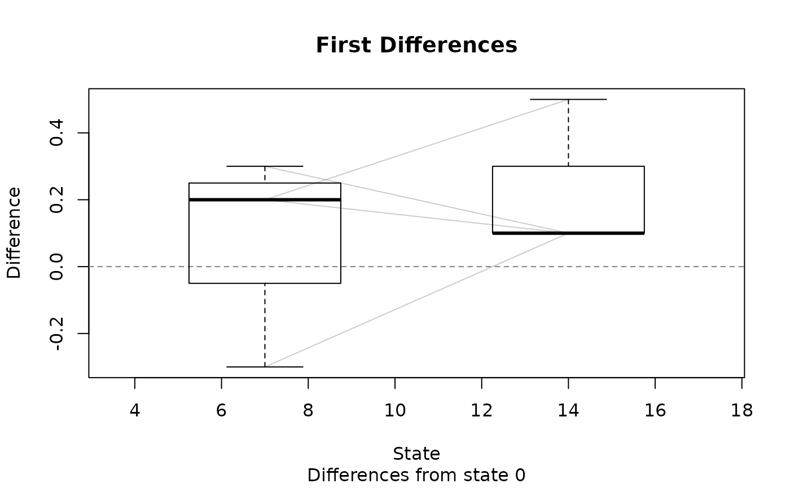

For repeated measures: how much a value changes within each subject from
one time point (state) to the next, or from a baseline. These paired
changes remove each subject's own level, so they show change over time
that pooled comparisons of time points can't (Bokulich et al. 2018).
The same as q2-longitudinal's first-differences action.
Usage
first_differences(
x,
subjects,
states,
data = NULL,
baseline = NULL,
replicates = "error",
margin = 1L,
norm = "none",
pseudocount = NULL,
seed = 0L
)Arguments
- x
What to difference: a numeric vector with one value per sample (such as an
alpha_div()result); the name of a numeric column ofdata(q2'smetric); or a count table (any of the types listed under Input Types), whose features are all differenced at once, afternorm.- subjects
The subject (individual) of each sample: one value per sample, matched to the samples by name when both are named, else in the samples' order; or, with
data, the name of one of its columns (q2'sindividual_id_column). NoNAs.- states
The time point of each sample, as a number (days, weeks, or visit numbers): given as
subjectsis (q2'sstate_column). At least two distinct values; noNAs.- data
Optional sample metadata: a data frame with one row per sample, holding the columns named in
x,subjectsandstates. Rows are matched to the samples by row name (the names ofx, or the sample names of a count table ordm), and rows for other samples are ignored; without row names, they must be in the samples' order. Whenxnames one of its columns, its rows are the samples. Default:NULL.- baseline
NULL(the default) for first differences, between consecutive states. Or one of the states: then each state is compared with it instead (static differences, such as changes from before a treatment).- replicates
What to do when a subject has more than one sample at a state (q2's
replicate_handling):'error'(the default),'drop'(that subject is left out of the pairs that involve the state) or'random'(one of them is picked at random, withseed).- margin
The margin containing samples.
1if samples are rows,2if samples are columns. Ignored whencountsis a special object class (e.g.phyloseq). Default:1- norm
For a count table, how to normalize it first:
'none'(the default; the values as given),'percent'(relative abundances, q2's relative frequencies),'clr', or any othernormofnormalize(). Ignored otherwise.- pseudocount
Value added to counts to handle zeros when
norm = 'clr'or'log'. Ignored for other normalization methods. See Pseudocount section.- seed
An integer seed for
replicates = 'random'. Default:0.
Value
A data frame of class c("ecodive_first_differences", "data.frame"), one row per pair of samples, ordered by pair of states
and then by subject (in the order of their factor levels, or sorted),
with columns:
sampleThe later sample of the pair (q2's index): its name, or its position when the samples have no names.
subjectThe subject.
state_fromThe earlier state (the baseline, with one).
stateThe later state.
differenceThe value at
stateminus the value atstate_from. For a count table, one column per feature instead, named by feature.
Pairs whose difference is NA are left out, as q2 does. With
baseline, attribute baseline holds it. plot() draws the
differences against the state.
Details
Pairs of samples: the states are the distinct values of states
over all the samples, sorted. Without baseline, each pair of
consecutive states \((t_k, t_{k+1})\) pairs, for every subject with a
sample at both, those two samples; with baseline = b, each pair is
\((b, t)\). A subject that skipped a state contributes nothing on
either side of it: one sampled at \(t_1\) and \(t_3\) but not
\(t_2\), when another subject was sampled at \(t_2\), gives no pair
at all. This is q2-longitudinal's rule, kept for parity. To compare each
subject's consecutive samples whatever their times, give states as
each subject's visit number (1, 2, 3, ...) instead.
To test the differences, use stats::wilcox.test() or
stats::t.test() on one pair of states (q2's pairwise-differences
action: first_differences(x, ..., baseline = s1) and the rows whose
state is s2), or a linear mixed model with a random intercept per
subject, as q2-longitudinal's tutorial does.
Differences from q2-longitudinal:
q2 returns the pairs in the arbitrary order of a Python set of subjects; ecodive sorts them, and returns the subjects and states alongside the differences.
q2 takes one feature of a table at a time (its
metric); ecodive differences them all, afternorm.With
replicates = 'random', q2 draws with Python's unseededrandom.choice()for each pair of states, and so does ecodive, but with its own seeded generator (PCG, one stream per pair of states, subject and side of the pair): the picks differ from q2's, as from one q2 run to the next.q2 reads the states from every row of the metadata; ecodive from the samples of
xalone.NAinsubjectsorstatesis an error, asgroupsis elsewhere in ecodive; q2 has no rule for it.
References
Bokulich, N. A., Dillon, M. R., Zhang, Y., Rideout, J. R., Bolyen, E., Li, H., Albert, P. S., & Caporaso, J. G. (2018). q2-longitudinal: longitudinal and paired-sample analyses of microbiome data. mSystems, 3, e00219-18. doi:10.1128/mSystems.00219-18
See also
first_distances(), volatility(), nmit().
Other longitudinal:
feature_volatility(),
first_distances(),
nmit(),
volatility()
Examples
# Four subjects, each sampled on days 0, 7 and 14.
meta <- data.frame(
subject = rep(c('a', 'b', 'c', 'd'), each = 3),
day = rep(c(0, 7, 14), 4),
row.names = sprintf('s%02d', 1:12) )
shannon <- setNames(c(2.1, 2.4, 2.2, 1.8, 2.0, 2.3, 2.5, 2.2, 2.6, 1.9, 2.1, 2.0), rownames(meta))
first_differences(shannon, 'subject', 'day', meta)
#> # A data.frame: 8 × 5
#> # First Differences
#> sample subject state_from state difference
#> <chr> <chr> <dbl> <dbl> <dbl>
#> 1 s02 a 0 7 0.3
#> 2 s05 b 0 7 0.2
#> 3 s08 c 0 7 -0.3
#> 4 s11 d 0 7 0.2
#> 5 s03 a 7 14 -0.2
#> 6 s06 b 7 14 0.3
#> 7 s09 c 7 14 0.4
#> 8 s12 d 7 14 -0.1
# Changes from day 0.
fd <- first_differences(shannon, 'subject', 'day', meta, baseline = 0)
fd
#> # A data.frame: 8 × 5
#> # First Differences
#> sample subject state_from state difference
#> <chr> <chr> <dbl> <dbl> <dbl>
#> 1 s02 a 0 7 0.3
#> 2 s05 b 0 7 0.2
#> 3 s08 c 0 7 -0.3
#> 4 s11 d 0 7 0.2
#> 5 s03 a 0 14 0.1
#> 6 s06 b 0 14 0.5
#> 7 s09 c 0 14 0.1
#> 8 s12 d 0 14 0.1
#> # Attributes: baseline
plot(fd)

# Every feature of a count table, as relative abundances.
counts <- matrix(rpois(12 * 5, 20), 12, dimnames = list(rownames(meta), letters[1:5]))
first_differences(counts, 'subject', 'day', meta, norm = 'percent')
#> # A data.frame: 8 × 9
#> # First Differences
#> sample subject state_from state a b c d e
#> <chr> <chr> <dbl> <dbl> <dbl> <dbl> <dbl> <dbl> <dbl>
#> 1 s02 a 0 7 0.0278 -0.0153 -0.0355 0.00154 0.0214
#> 2 s05 b 0 7 0.0636 -0.0669 0.0406 -0.139 0.102
#> 3 s08 c 0 7 -0.0114 -0.0589 -0.00211 0.0647 0.00778
#> 4 s11 d 0 7 -0.0309 -0.0228 0.0672 -0.034 0.0204
#> 5 s03 a 7 14 -0.00481 0.0219 0.00909 -0.0326 0.00642
#> 6 s06 b 7 14 -0.065 0.0961 -0.0789 0.132 -0.0839
#> 7 s09 c 7 14 0.0245 0.0818 -0.0508 -0.0893 0.0338
#> 8 s12 d 7 14 0.117 0.0426 -0.129 -0.00233 -0.0288